![\(\bar u'\left[\gamma^\mu F_1(q^2)+\frac{i\sigma^{\mu\nu}q_\nu}{2m}F_2(q^2)\right]u\)](m/5eab001a9e9ed8bdb224455c05d3513548ce7de0.svg) , and
, and ![\(g=2[F_1(0)+F_2(0)]=2+\frac\alpha\pi+\dots\)](m/8b67b88415aba389badc5ca0712df002a47eb9de.svg) :
: Statement
Most general vertex consistent with Lorentz invariance, parity and current conservation:
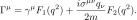
 is charge normalisation (Ward identity). The Gordon decomposition
is charge normalisation (Ward identity). The Gordon decomposition 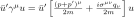
shows that the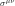
term is a magnetic coupling; in a static field the interaction is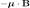
with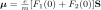
.Derivation of α/2π (outline)
One-loop vertex with Feynman parameters
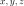
: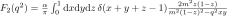
. At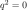
: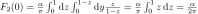
. UV finite: no counterterm needed — a genuine prediction.Comparison with experiment
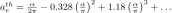
; measured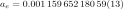
in a one-electron Penning trap (Schwinger 1948; Kusch and Foley 1948). Comparing gives the most precise determination of (with atom-interferometry values agreeing at the
(with atom-interferometry values agreeing at the 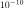
level). For the muon, hadronic loops matter and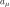
is a probe of new physics.Worked example
Penning trap: cyclotron
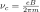
and spin precession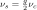
; the anomaly frequency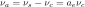
. At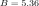
T,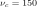
GHz,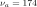
MHz — measuring a ratio of two frequencies gives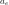
directly.Engineering applications
Defines for the SI (via
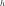
,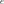
fixed, links electrical and atomic units), EPR/ESR spectroscopy uses 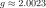
as reference, precision tests underpin the reliability of QED-based atomic clocks.Pitfall
 is not a prediction of spin alone but of the Dirac equation with minimal coupling; adding a Pauli term by hand could give any
is not a prediction of spin alone but of the Dirac equation with minimal coupling; adding a Pauli term by hand could give any  . QED fixes the corrections.
. QED fixes the corrections.